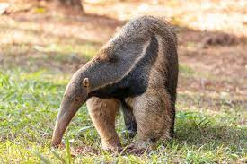

Oso hormiguero
Vermilingua

De hábitos diurnos cuando no es molestado, se vuelve nocturno en zonas habitadas.
Vive en solitario o en pareja y se mueve en amplios territorios de hasta 25 km2, siempre en
busca de termiteros u hormigueros para alimentarse. Para acceder al interior, el animal utiliza
sus fuertes uñas curvadas. Habita con más frecuencia en pastizales abiertos y sabanas arboladas,
aunque también vive en selvas y bosques tropicales y subtropicales desde América Central hasta el
norte de Argentina.
- El oso hormiguero presenta un hocico largo y tubular totalmente desprovisto de dientes.
- Su cuerpo mide 50 cm de longitud y su cola de 150 a 180 cm; pesa de 27 a 50 kg. Se alimenta de hormigas y termitas que captura gracias a su lengua larga y espinosa y a la saliva pegajosa.
- Es un animal solitario que sólo se reúne en pareja durante la época de celo.
- En realidad, el oso hormiguero sí se alimenta de grandes cantidades de hormigas,
- Siente predilección por las termitas. Estos pequeños insectos son denominados a menudo como hormigas blancas.